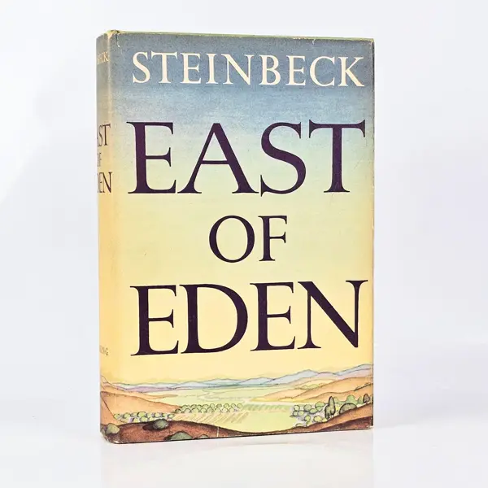
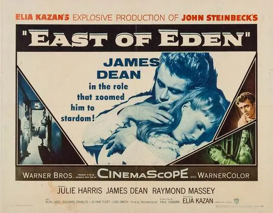
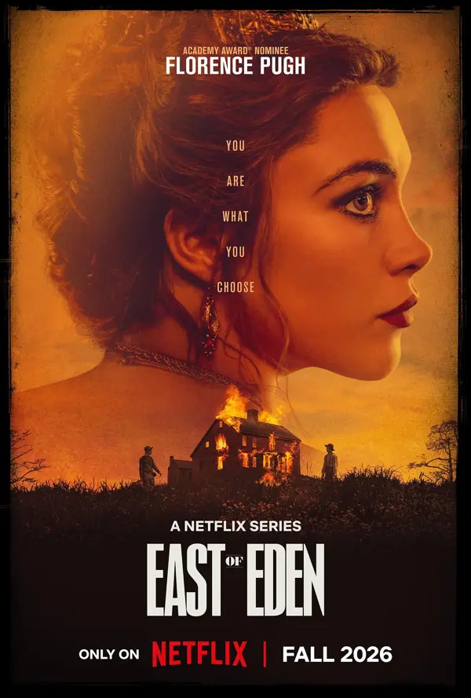

Netflix's new East of Eden adaptation arrives October 1, 2026.
Can a 1952 Novel Still Understand Us in 2026?
What does AI think makes John Steinbeck's East of Eden relevant today?
We asked three AIs the same question. Their answers overlap, diverge, and sometimes go beyond the evidence. Explore the reasoning — then make your own judgment.
Three AIs. One question. You decide.

The question, and what the novel is about
East of Eden was published in 1952. It follows two families in California's Salinas Valley and draws on the Cain and Abel story. Select a theme to see how it is usually read. INTERPRETATION

Before the AIs answer
What do YOU think makes East of Eden relevant today? Choose any. USER OPINION
An interactive reflection, not representative data. Stored only in your browser.
Three AIs. One question.
Summaries of each response, listed alphabetically. Nothing here ranks the systems. AI ANALYSIS
Where do the AIs agree?
This measures overlap between these three AI responses. It is NOT a scientific measure of importance or truth. Select a row for detail.
Coded by ThinkScope editors from summaries of the three responses; borderline codings are noted. Source: the three AI responses used for this project.
But are the AIs right?
Classify each statement, then reveal. The aim: AI analysis can mix useful interpretation with extrapolation.
Evidence meter
ThinkScope editorial framework, not research. No percentages; the meter shows the type of support each claim has.
1952 → 2026
Why does this story keep returning? Select a year.
Repeated adaptation shows continuing creative and cultural interest. It does not prove the novel is universally popular with today's audience. Evidence is limited.
Cathy Ames: monster or more complicated?
Readings differ. Move the slider; no position is presented as correct. INTERPRETATION
Timshel: can we escape our past?
Do you believe people can escape the patterns they inherit? USER OPINION
Why this is debated
In the novel, “timshel” is tied to choice and moral agency. Its meaning and translation are contested, and no single rendering is definitive here. INTERPRETATION
Modern relevance matrix
Contemporary interpretations, not claims that Steinbeck predicted anything.
| Theme | In the novel | Modern question |
|---|
1952 and 2026, side by side
1952
family · morality · inheritance · religion · identity · American Dream
2026
identity · family expectations · intergenerational patterns · self-determination · belonging · choice
These are interpretive parallels, not evidence that Steinbeck predicted the present.
Why East of Eden is back in the conversation
Netflix's adaptation premieres October 1, 2026. Names associated with the series in the information supplied for this page: Zoe Kazan, Florence Pugh, Christopher Abbott and Mike Faist. FACT (verify against Netflix before publishing)
Does a new adaptation show lasting relevance, or can it simply revive interest in an older work? We don't answer that for you. Evidence is limited.

So… is East of Eden still relevant?
Three perspectives. None is labeled correct.
A 1952 novel about families, choice, good and evil, and inheritance.
Three responses overlap on Cathy, timshel, free will and generational patterns.
Your starting lens appears here.
After exploring all three, what do you think?
Insufficient visitor data to show aggregate responses.
Your turn
Your answer is your interpretation — not a vote on an objective truth. Saved only in this browser.
People also ask
Is East of Eden still relevant today?
Readers and adaptors keep returning to it, but how relevant it is to today's audiences is not measured here. Evidence is limited.
Why is East of Eden still relevant?
Common readings point to family, choice and moral complexity. These are interpretations, and the AI responses on this page offer one set of them.
What is the main theme of East of Eden?
Readers identify several: family, free will, good and evil, and belonging. There is no single agreed main theme.
What does timshel mean in East of Eden?
It is tied to human choice in the novel. Its meaning and translation are debated.
Is East of Eden about free will?
Free will is widely discussed as a central question, though readers differ on how the book answers it.
What is the connection between East of Eden and Cain and Abel?
The novel draws on the Cain and Abel story, especially in its treatment of brothers and parental approval.
Why is Cathy Ames important?
She is among the most debated characters, and readings of her differ.
Is Cathy Ames evil?
Some readers see her that way; others read her as more complicated. See the slider above.
What does East of Eden say about family?
It portrays families as sources of both belonging and inherited burdens. That is an interpretation.
What does East of Eden say about generational trauma?
The phrase is a modern reading applied to the novel's inherited patterns, not Steinbeck's own wording.
Why is East of Eden being adapted by Netflix in 2026?
Netflix's adaptation is set to premiere October 1, 2026. We have no evidence about its reasons.
What is the difference between the East of Eden book, movie and Netflix series?
The novel came out in 1952; Elia Kazan's film in 1955 starring James Dean; a miniseries in 1981; the Netflix series follows in 2026. Adaptations differ in scope and emphasis.
Why did Steinbeck write East of Eden?
We do not present a single answer here; consult Steinbeck's own writings and biographies.
Is East of Eden based on a true story?
It is a novel, though Steinbeck drew on his family's Salinas Valley background.